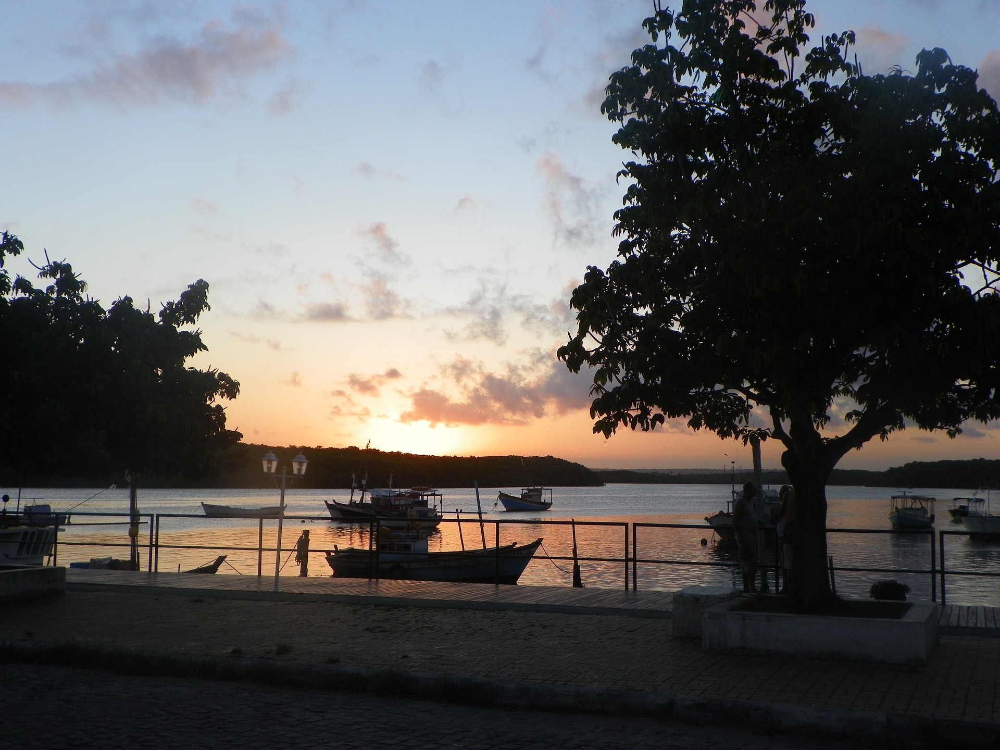
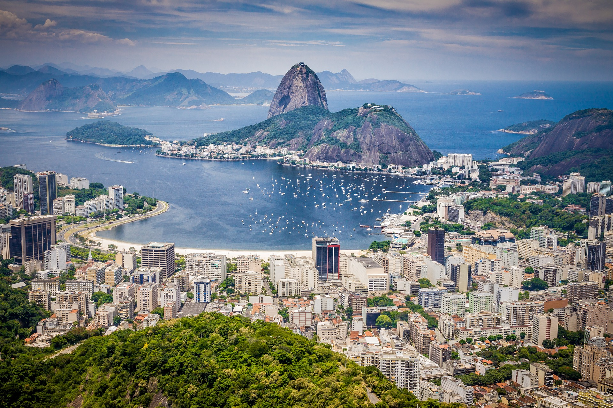
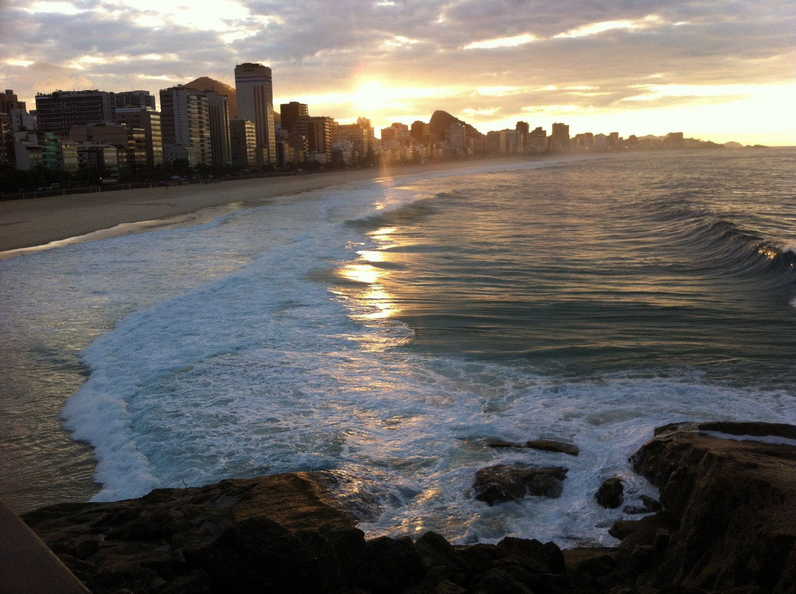
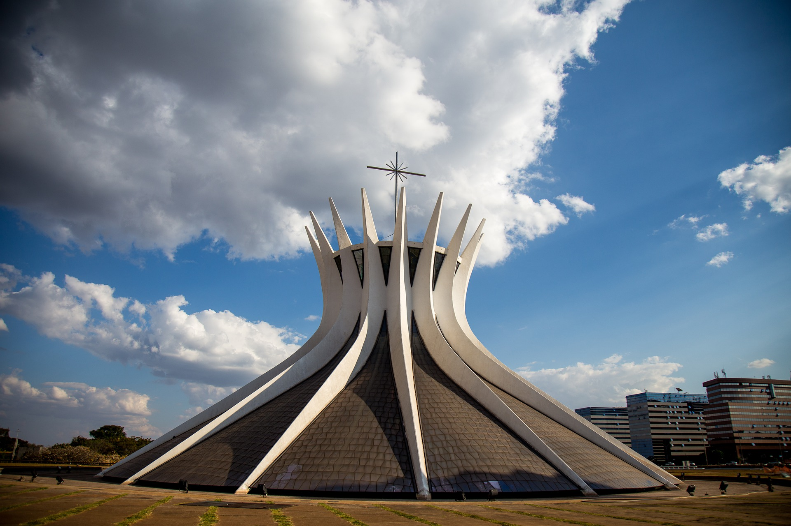
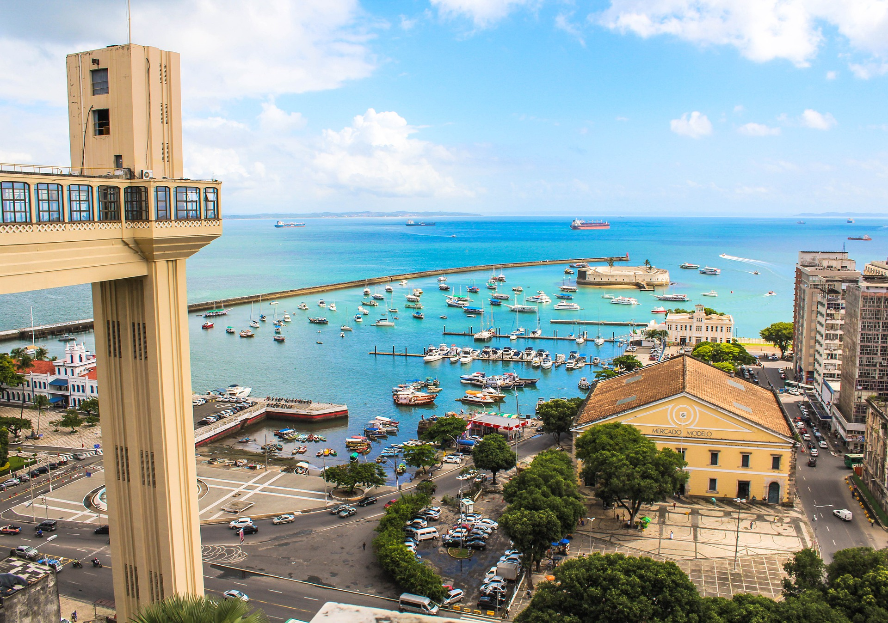

Brasil, oficialmente República Federativa de Brasil(en portugués, República Federativa do Brasil, pron.
AFI ( escuchar)), es un país soberano de América del Sur que comprende la mitad oriental del continente y algunos grupos de pequeñas islas en el océano Atlántico. Es el país más grande de América Latina. Con una superficie estimada en más de 8,5 millones de km²,3 es el quinto país más grande del mundo en área total (equivalente a 47 % del territorio sudamericano).12 Delimitado por el océano Atlántico al este, Brasil tiene una línea costera de 7491 km.3 Al norte limita con el departamento ultramarino francés de la Guayana Francesa, Surinam, Guyana y Venezuela; al noroeste con Colombia; al oeste con Perú y Bolivia; al suroeste con Paraguay y Argentina, y al sur con Uruguay. De este modo tiene frontera con todos los países de América del Sur, excepto Ecuador y Chile.13 La mayor parte del país está comprendido entre los trópicos terrestres, por lo que las estaciones climáticas no se sienten de una manera radical en gran parte de su territorio.
La selva amazónica cubre 3,6 millones de km² del territorio. Gracias a su vegetación y al clima, es uno de los países con más especies de animales en el mundo.
|
- Porto seguro
Porto Seguro es tan dinámica como cualquier otra parte de Brasil. Puedes viajar 24 kilómetros en goleta desde la orilla del río Buranhem hasta el parque marino Recife de Fora para hacer una exploración en el mar.
Una escalera de la ciudad te guiará hasta la Ciudad Histórica para ver todo desde arriba, mientras disfrutas de demostraciones de capoeira. 
- Rio de janeiro
Río de Janeiro (en español, Río de enero), fundada como São Sebastião do Rio de Janeiro,4 es una ciudad, municipio brasileño y capital del estado homónimo, ubicada en el sureste del país.
Es la segunda ciudad más poblada de Brasil después de São Paulo. 
- Playa de Copacabana
Localizada en la Zona Sur de la ciudad, Copacabana tiene una playa en forma de media luna y es apodada Princesita del Mar debido a su áurea en las décadas del 30, 40 y 50.
Barrio de bohemia, glamour y riqueza, Copacabana dio origen a numerosos eventos y movimientos artísticos, convirtiéndose en referencia turística. 
- Brasilia
Brasilia (en portugués Brasília) es la capital federal de Brasil y la sede de gobierno del Distrito Federal, localizada en la región Centro-Oeste del país. Tiene una población de 3 015 268 habitantes según estimaciones de 2019 del Instituto Brasileño de Geografía y Estadística,1 lo que la convierte en la tercera ciudad del país por población, además tiene una población de 4 284 676 en la zona metropolitana.2
Es sede del gobierno federal, conformado por los tres poderes de la República (ejecutivo, legislativo y judicial). 
- Porto de Galinhas
La playa Porto de Galinhas fue escogida siete veces como la mejor playa de Brasil por la revista Viagem e Turismo. En su arena blanca y fina, y sus aguas cristalinas
te ofrecen servicios de sombrillas y tumbonas, pero si consumes bebida o comida el servicio de sombrillas te sale gratis. 
|
OTROS LUGARES
|
|
RUSIA
|
|
|
|
TOKIO
|
|
|